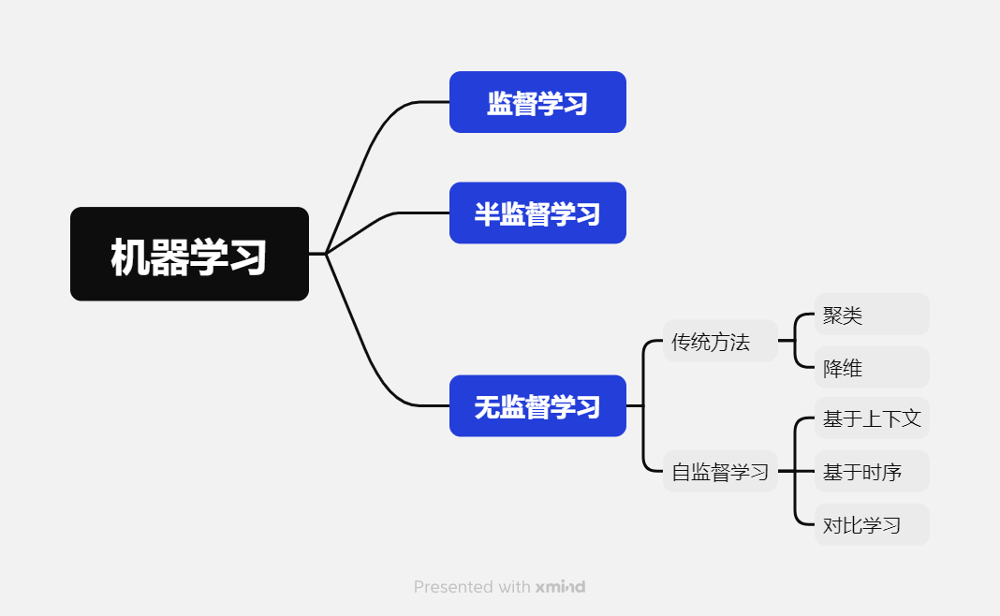
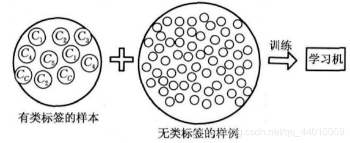
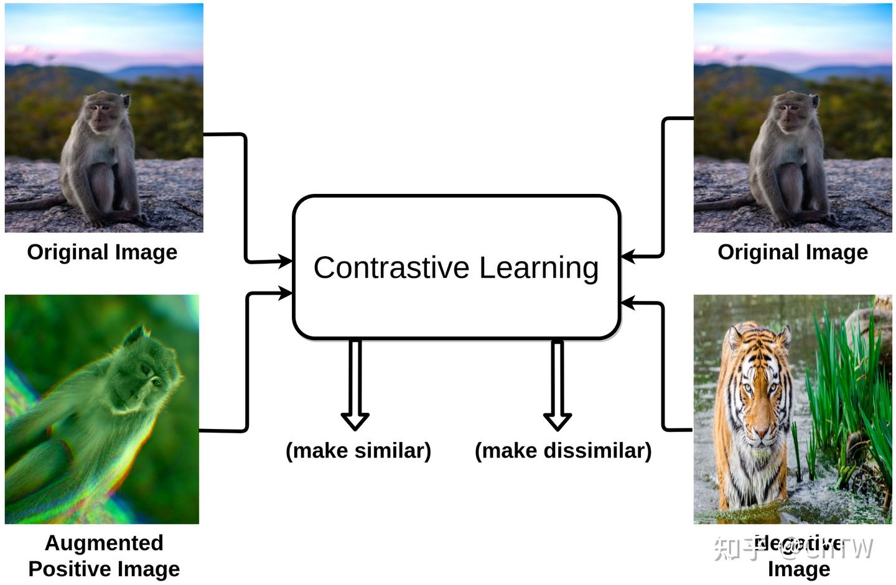
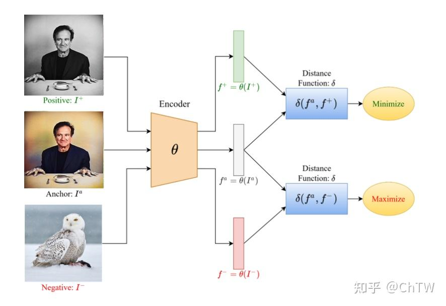

机器学习的学习方法
监督、无监督与半监督
机器学习中基本的学习方法有：监督学习（Supervised learning）、半监督学习（Semi-supervised learning）和无监督学习（Unsupervised learning）。他们最大的区别就是模型在训练时需要人工标注的标签信息，监督学习利用大量的标注数据来训练模型，使模型最终学习到输入和输出标签之间的相关性；半监督学习利用少量有标签的数据和大量无标签的数据来训练网络；而无监督学习不依赖任何标签值，通过对数据内在特征的挖掘，找到样本间的关系，比如聚类。

监督学习
监督学习就是已知输入数据（Input data）和输出数据（Annotations），通过训练一个模型（Model）来建立输入和输出之间的映射。在回归和分类任务中应用广泛。常用的监督学习方法包括：决策树、SVM、神经网络、线性回归和逻辑回归等。
无监督学习
无监督学习是已知输入数据（Input data），通过训练一个模型（Model）来获取输入数据的结构以及之间的关系。常用于聚类、降维、异常检测等任务。常用的无监督学习方法包括：聚类分析（Clustering）、主成分分析（PCA）、自编码器（Autoencoder）。
半监督学习
半监督学习将大量的无类标签的样例加入到有限的有类标签的样本中一起训练来进行学习，旨在解决现实世界中数据丰富但标签稀缺的常见问题。其建立在三个关键假设之上：平滑性假设（在输入空间中相近的数据点往往具有相似的标签）、聚类假设（数据倾向于形成离散的簇，同一簇内的样本很可能共享相同标签）和流形假设（高维数据实际上分布在低维流形结构上，标签在该流形上变化平缓）。

无监督学习
传统方法
传统无监督学习方法主要分为以下几类：
- 聚类：核心思想是将数据集中的样本划分为若干个组（簇），使得同一簇内的样本彼此相似，而不同簇的样本差异较大。例如，K-means。
- 降维：核心思想是将高维数据映射到低维空间，同时尽可能保留数据的关键信息（如方差、结构）。目的是可视化、压缩数据或去除噪声。例如，主成分分析、自编码器等。
自监督学习
过去的无监督学习，例如自编码器，仅仅是做了维度的降低而已，并没有包含更多的语义特征，对下游任务并没有很大的帮助。因此想要在不需要手工标记数据的情况下，训练过程还能对任务本身有很大的帮助，可以包含更多的语义特征，自监督学习从而被提出。
自监督学习主要是利用代理任务（pretext）从大规模的无监督数据中挖掘自身的监督信息，通过这种构造的监督信息对网络进行训练，从而可以学习到对下游任务有价值的表征。也就是说，自监督学习不需要任何的外部标记数据，这些标签是从输入数据自身中得到的。自监督学习的模式仍然是 Pretrain-Fintune 的模式，即先在 pretext 上进行预训练，然后将学习到的参数迁移到下游任务网络中，进行微调得到最终的网络。
所谓代理任务（pretext），就是为了使用自监督学习进行训练而定义出的任务（和现实中的分类、检测、分割任务不一样）。常用的代理任务有：
- 图像旋转：通过训练网络来识别输入图像的 2D 旋转角度以学习图像特征
- 图像着色：使用图像灰度化来作为图像的输入数据，对应的彩色图像为标签数据训练网络
- 图像修复：随机去掉图像中的某个部分来生成训练数据，原数据作为训练标签来进行预训练
而自监督学习的方法主要可以分为 3 类：基于上下文（Context based），基于时序（Temporal Based），基于对比（Contrastive Based）。这里着重介绍基于对比的方法——对比学习。
基于上下文
基于数据本身的上下文信息，我们其实可以构造很多任务，比如在 NLP 领域中最重要的算法 Word2vec 。Word2vec 主要是利用语句的顺序，例如 CBOW 通过前后的词来预测中间的词，而 Skip-Gram 通过中间的词来预测前后的词。 而在图像中，图像拼图（将图像分割，预测每一部分的相对位置或者预测出这是哪一种打乱方式）、图像修复（上述例子中提到）、图像着色（上述例子中提到）、图像旋转（上述例子中提到）等任务都是典型的作为pretext的例子。
基于时序
之前介绍的方法大多是基于样本自身的信息，比如旋转、色彩、裁剪等。而样本间其实也是具有很多约束关系的，这里介绍利用时序约束来进行自监督学习的方法。最能体现时序的数据类型就是视频了。 第一种思想是基于帧的相似性，对于视频中的每一帧，其实存在着特征相似的概念，简单来说我们可以认为视频中的相邻帧特征是相似的，而相隔较远的视频帧是不相似的，通过构建这种相似（position）和不相似（negative）的样本来进行自监督约束。另外，对于同一个物体的拍摄是可能存在多个视角（multi-view），对于多个视角中的同一帧，可以认为特征是相似的，对于不同帧可以认为是不相似的。还有一种想法是基于无监督追踪方法，首先在大量的无标签视频中进行无监督追踪，获取大量的物体追踪框。那么对于一个物体追踪框在不同帧的特征应该是相似的（positive），而对于不同物体的追踪框中的特征应该是不相似的（negative）。 除了基于特征相似性外，视频的先后顺序也是一种自监督信息。比如基于顺序约束的方法，可以从视频中采样出正确的视频序列和不正确的视频序列，构造成正负样本对然后进行训练。简而言之，就是设计一个模型，来判断当前的视频序列是否是正确的顺序。
对比学习
对比学习则是一种特殊的无监督学习方法，旨在通过最大化相关样本之间的相似性并最小化不相关样本之间的相似性来学习数据表示。通常使用一种高自由度、自定义的规则生成正负样本。在模型预训练中有着广泛的应用。

对比学习的一个通用框架如下：

图中 Positive 和 Anchor 组成一组正样本对，这里 Anchor 可以是图片，可以是音频，可以是特征；Positive 和Anchor 一样，可以是多种数据类型，而且不一定要和 Anchor 是同种数据类型（比如 CLIP)；
Negative 和 Anchor 组成一组负样本对，Negative 同样可以是多种数据类型，也不需要和 Anchor 是同一种数据类型。
举几个例子：
数据增强方式：Anchor 是一张图片，Positive 是 Anchor 图片的增强（裁剪，颜色变化等）图片，Negative 是其他图片；
多视角方式：Anchor 是张三的正面图片，Positive 是张三其他视角（反面、侧面等）的图片，Negative 是非张三图片；
多传感器方式：Anchor 是RGB相机拍摄的张三图片，Positive 是雷达获取的张三图片，Negative 是非张三图片；
多模态方式：Anchor 是狗的图片，Positive 是描述包含狗图片的一段文字，Negative 是其他图片或者非描述狗的一段文字；
总之，正负样本的定义自由度非常的高，而且往往训练出来的 Backbone 模型，具有非常好的迁移性能。
既然对比学习是一种无监督学习方法，那么为什么又会有正负样本？
无监督学习虽然没有标注，但并不表示不需要“规则”（标注算是规则的一种），就像人联想到相似的物体，并不是没有规律的，这里的规律可能是颜色相近、外观类似、属于同一大类等等。因此无监督学习并非是使用没有标注的数据，而是使用一种能够自我标注的标注数据，这些标注构建起一套规则，人工智能就是学习一种能够在这套规则下运行准确的算法。那么正负样本的定义就是在构建一套规则。
对比学习通常的代理任务有两种：
个体判别：对于数据集中的任意一张图片而言，除了其自身通过增强获取到的图片为正样本外，其余图片都为负样本，即使该图片和自身图片是同一个对象。
数据聚类：对于不同视角、传感器、模式获取的同一对象数据，为正样本，其余数据都为负样本。
参考
一文看懂半监督学习(Semi-supervised Learning)和自监督学习(Self-Supervised Learning)